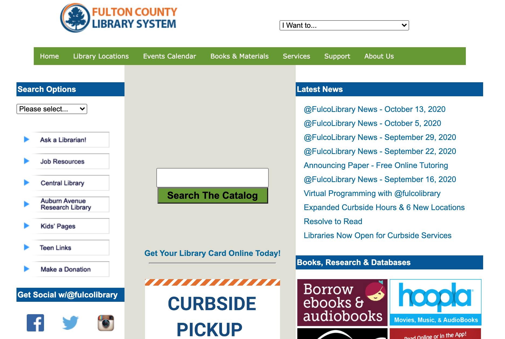
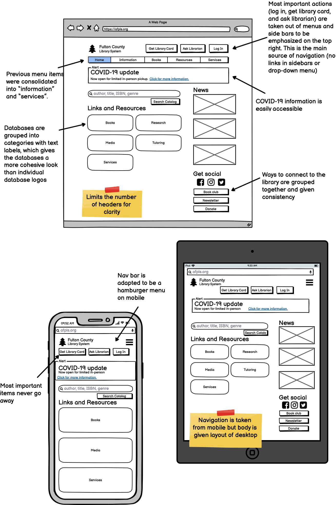
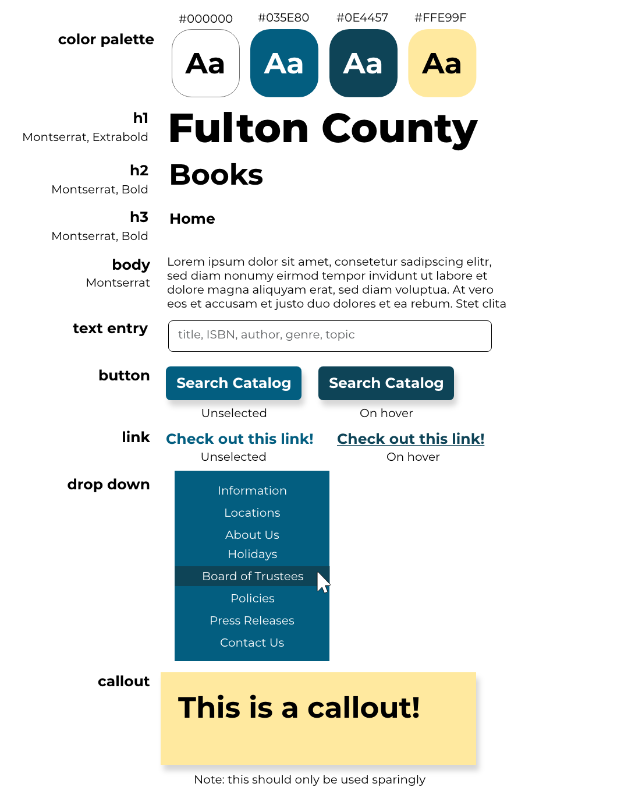
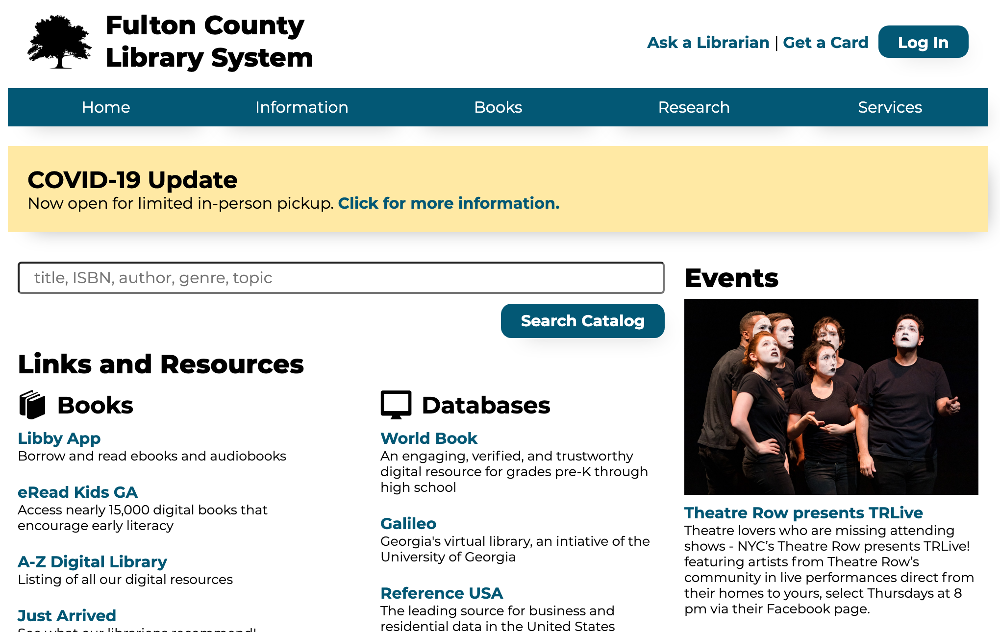

Objective
Analyze one page of a website based on usability and accessibility. Then, draft and build and improved version.
The Website
Fulton County Library System is the central hub for 34 libraries in Fulton County and Atlanta, Georgia.
Analysis
Usability Problems
- Too many pictures
- Color palette isn't coordinated
- Lack of contrast (both the white and black text on light green background are hard to read)
- Headers don’t stand out against pictures (databases, etc.)
- Column sizes and spacing are inconsistent
- Use of pictures of text instead of text (on the left column)
- For example locations, event calendar, services, and about are all navigation bar menu options, news is a box on the homepage
- Within "books and materials", my account and catalog search are grouped together
- It's hard to remember where other pages are located because they're so sporadic (in sidebars, nav bars, linked, etc.)
- Uses drop down menu on top right for "I want to..." instead of intuitive design
- Coronavirus updates are at the bottom
- Account info is in a menu item and not at the top as expected
- Search is in the middle of the page, should be at the top
Accessibility Concerns
Low-Fi Mockup
Layouts consolidate navigation from the original website, focusing on the navigation bar at the top and removing the drop down menus and sidebars. This makes the website more usable because all actions are accessible from the nav bar, so the user knows where to look. Additionally, other items of interest are given more emphasis on the home page (for example, databse links, news, and search).
Visual Style Guide
Color palette was taken from the Fulton County logo (blue and orange), yet the orange was shifted toward yellow to be more timeless. Typography was chosen to be cohesive to be lively and visually interesting yet confident and sleek.
Implementation
Redesign is deployed here The validators and accessibility checkers give insight that is undetectable to the eye. Even though I learned about best practices earlier, using WAVE on my own submission showed me the things I forgot about, such as an alt tag here and there.
Conclusion
The original library website has many important functions, all of which I wanted to make accessible in the redesign, however, with a more simplified design, color palette, and fewer photos. The library is not trying to sell a product, but serves a more utilitarian purpose. The website offers visual interest when appropriate (icons, pictures of events), but mainly lets the content breathe so that a user can quickly access whatever they need.